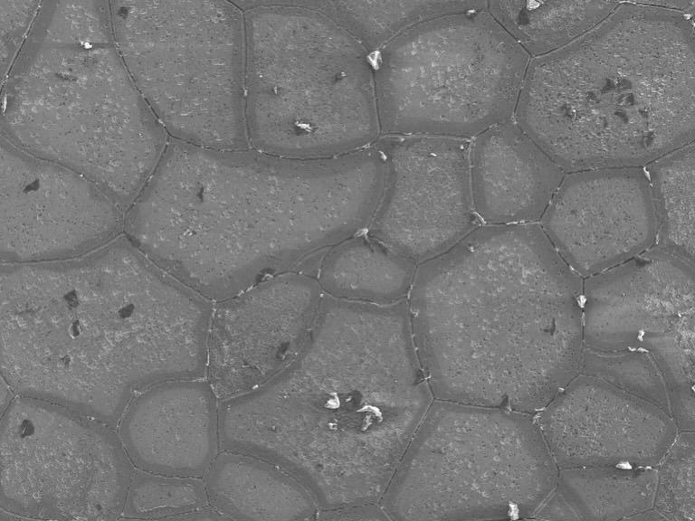
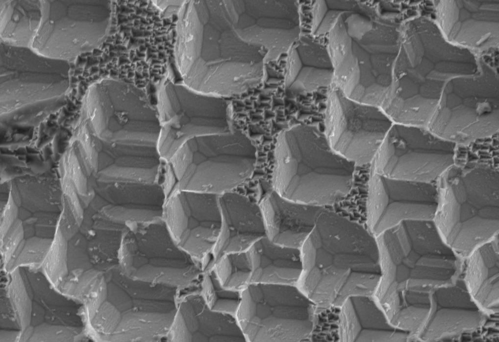

Sensitisation in stainless steel is a solved problem. It has been solved since roughly the 1950s, written into standards, put in textbooks, and everyone moved on. You heat ferritic stainless into the wrong temperature range, chromium carbides nucleate at grain boundaries, the surrounding metal loses chromium, and now you have a corrosion path where you didn't want one. This is Cr₂₃C₆. This is carbon. This is fine, we know this.
Nitrogen does exactly the same thing and nobody talks about it as much.
Cr₂N precipitates in the same temperature window. Same depletion mechanism. Same intergranular corrosion result. The difference is that carbon gets specified, measured, and controlled. Nitrogen content varies between suppliers, isn't always reported, and increases when recycled scrap goes into the melt — which is increasingly often, because steel is expensive and scrap is cheaper.
The question here was whether nitrogen-driven sensitisation in 430SS looks different from carbon-driven sensitisation, and whether the standard test method can tell them apart.
It's a reasonable question. The first answer the experiment gave back was not about nitrogen.
The plan
The plan was straightforward. Take 430 ferritic stainless steel from three different suppliers, apply heat treatments across the sensitisation window — 600–900 °C, times from 30 s to 2 h — run DL-EPR on each one, get a degree of sensitisation value, correlate it with nitrogen content. Done by December.
The as-received samples came back with DoS > 40%. Before any heat treatment. That's not supposed to happen — annealed ferritic stainless should sit well below 5%.
So something was wrong. The question was what.
Two scenarios, neither fully satisfying
SEM-EDS on the as-received material showed TiO₂-rich inclusions and MnS. These aren't unusual in 430SS, but the standard DL-EPR electrolyte — 0.5 M H₂SO₄ + 0.01 M KSCN — attacks them. The thiocyanate is particularly aggressive. Inclusions dissolve during the reactivation sweep, add current to Ir, and the DoS calculation inflates. That's Scenario A.
Scenario B: the electrolyte is just too aggressive for this alloy. Reducing SCN⁻ from 0.01 M to 0.001 M changed the curve shape but didn't fix the numbers. Dropping it further to 0.0001 M gave DoS = 131%, which is physically meaningless. Running H₂SO₄ alone gave 69.93% on a sample that should read near zero.
Both scenarios are probably true simultaneously. The material had an inclusion problem and the test method wasn't designed for ferritic grades with this inclusion chemistry. ASTM G108 was developed for austenitic 304/304L. It works less cleanly here.
The underlying problem: the material wasn't homogeneous
The noisy curves, the high baseline DoS, the inconsistent results between samples from different suppliers — it all pointed to the same thing. The starting material had compositional segregation from casting. Chromium-depleted zones that weren't from sensitisation at all, just from solidification. Whatever the DL-EPR was picking up, it wasn't only grain boundary sensitisation.
The only way forward was to homogenise first, then sensitise deliberately, then measure. Reset the microstructure to something known, then run the experiment properly.
Homogenisation attempt 1: too much of a good thing
The diffusion calculation wasn't complicated. Chromium diffusion in α-Fe, Arrhenius, Fick's second law with a sinusoidal segregation profile, dendrite spacing λ = 30 µm. Target: reduce segregation ratio from r = 1.40 to r = 1.10.
At 1175 °C, that comes out to roughly 22 minutes soak time. Add a margin, call it 45 minutes. Preheat to 900 °C first to pass through the embrittlement window quickly, then ramp at 80 °C/min to target.
The diffusion worked. The grain size went from 13 µm to approximately 350 µm. The homogenisation also worked, in the sense that the material was very thoroughly processed. What it wasn't, was usable. Neither sample — quenched or air-cooled — could be passivated at any potential, even above +2 V. Hardness increased from 158 HV to around 192–196 HV. SEM showed grain boundary embrittlement.
1175 °C for 45 minutes was too much. The grain growth was excessive and the electrochemical behaviour was broken.
Attempt 2: full factorial DoE
The theoretical approach gave a starting point that turned out to be wrong. So the next step was empirical — a 3×3 full factorial design: temperatures of 1050, 1100, 1150 °C, times of 15, 25, 35 minutes, each condition run twice for a quenched and an air-cooled sample. The equalisation step was reduced to 5 minutes at 900 °C — the small sample size (10×10×2 mm) equilibrates fast.
The 35 min / 1100 °C quenched sample showed an intermetallic alpha phase in SEM — phase formation during cooling, which quenching didn't fully suppress. The 1150 °C conditions showed grain growth again, less extreme than before but still problematic. The 1050 °C conditions kept grain size closer to reference but showed incomplete homogenisation in some cases.
Hardness scatter across the DoE ranged from 163 to 223 HV₃, with standard deviations as low as 2 and as high as 12. The air-cooled 1100 °C conditions looked most consistent — hardness around 178–195 HV₃, low scatter, no obvious phase formation.
DL-EPR on the 1100 °C air-cooled series still showed DoS values in the 40–49% range. Which is still high. The problem isn't fully resolved.
What happened when the potential was too high
At some point during this, I ran a scan with the vertex potential set too high. Instead of passivating the surface and selectively attacking chromium-depleted grain boundaries, the electrolyte etched straight through. Past the passive film, into the grain interior.
What came out in the SEM was not what you'd expect from a failed experiment.


The grain surfaces had faceted according to their crystallographic orientation. Each face is a low-index plane — the dissolution rate is anisotropic, and once the passive film is gone, the crystal dissolves preferentially along high-energy surfaces, leaving the stable faces exposed. The geometry is exactly what Wulff described in 1901.
This is not a useful result for the sensitisation study. But it's a real observation. If you look at the stepped surfaces in FIG 02, you can read the orientation of each grain — the {100} facets are obvious. People did this deliberately in the 1950s, before EBSD existed, to determine crystallographic orientation from etch pit shape. It worked then. It still works.
Would have been a paper then. Now it's a Wednesday.
Where this leaves things
The sensitisation study is ongoing. The homogenisation problem isn't fully solved — 1100 °C air-cooled for 25–35 minutes looks like the best available option, but the DoS values from DL-EPR are still elevated and the interpretation is uncertain. Whether that's residual segregation, inclusion contribution, or something about the test method applied to this alloy, isn't clear yet.
What is clear: the standard DL-EPR protocol for austenitic grades doesn't transfer cleanly to 430SS with higher inclusion density. The thiocyanate concentration matters more than the standard implies. And the starting material condition matters enormously — you can't measure sensitisation in something that's already got chromium-depleted zones from casting.
None of this was in the test plan.